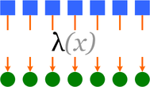
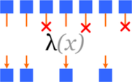
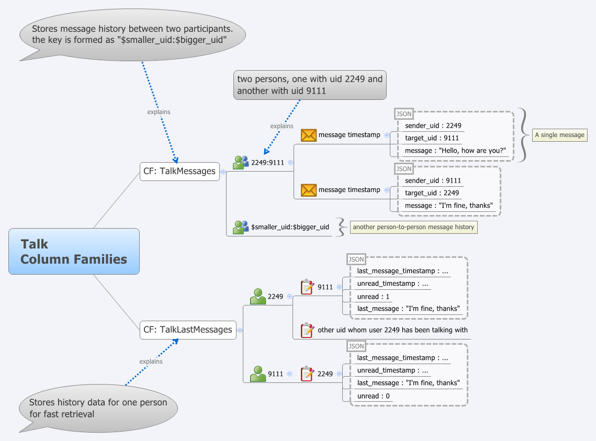

Базы данных: введение, часть восьмая
Илья Тетерин
2012-11-19
(use arrow keys or PgUp/PgDown to move slides)
Илья Тетерин
2012-11-19
(use arrow keys or PgUp/PgDown to move slides)
Hadoop / MapReduce
Column Oriented Databases
Bigtable / Hbase / Cassandra
MapReduce - очень мощный механизм обработки данных, когда мы можем выделить фазы вычислений по типам - зависят от одного элемента, зависят от многих элементов.
У нас есть список значений (записей).
У хотим что-то посчитать по этому списку.
Введем понятие mapper - преобразует одно исходное значение в набор промежуточных (0 .. K значений).
Введем понятие reducer - имея на входе N промежуточных значений выдает на выход 0 .. M результатов.
Примеры алгоритмов - max / min / avg / sum ... top 10 значений по какой-то выборке етс
отображение (map) - делаем новый список, элементы которого получены применением функции к элементам исходного списка
фильтрация (filter) — каждый элемент списка проверяется на соответствие функции-предикату, и если элемент не соответствует, он выбрасывается из списка
свертка (reduce / fold) - "сворачиваем" множество значений в одно, комбинируя последовательно элементы множества

Требуются:
Множество элементов: что мы будем "сворачивать"
Начальный (пустой) элемент (unit): 1 - умножение, 0 - сложение, пустая строка - склеивание строк етс.
функция двух параметров - комбинатор:
v0 = combinator (unit, element);
далее vi = combinator(Vprev, element);
def square(x):
return x*x
vals = [1, 2, 3, 4]
newvals = []
for v in vals:
newvals.append(square(v))
def map(f, s):
result = []
for x in s:
result.append(f(x))
return result
vals = [1, 2, 3, 4]
newvals = map(square,vals)
Функциональная библиотека на Java
interface Filter<T> { boolean fits(T t); }
interface Function<X, Y> { Y apply(X arg); }
interface BiFunction<X, Y, Z> { Z apply(X x, Y y); }
public static <X, Y> List<Y> map(List<X> items, Function<X, Y> fu) {
final List<Y> out = new ArrayList<Y>(items.size());
for (final X item : items)
out.add(fu.apply(item));
return out;
}
public static <X> List<X> filter(List<X> items, Filter<X> fi) {
final List<X> out = new ArrayList<X>();
for (final X item : items)
if (fi.fits(item))
out.add(item);
return out;
}
public static <U, X> U reduce(List<X> items, BiFunction<U, X, U> fu, U unit) {
U out = unit;
for (final X item : items)
out = fu.apply(out, item);
return out;
}
final static Function<Integer, Integer> square = new Function<Integer, Integer>() { public Integer apply(final Integer arg) { return arg * arg; }}; final static Filter<Integer> evenFilter = new Filter<Integer>() { public boolean fits(final Integer integer) { return integer % 2 == 0; }}; final List<Integer> list = new ArrayList<Integer>(); for(int i = 0; i < 50; i++) list.add(i); final List<Integer> squaresOfEvens = map(filter(list, evenFilter), square); final List<Integer> evens = filter(list, evenFilter); final List<Integer> squaresOfEvens = map(evens, square);
final List<Integer> squares = new ArrayList<Integer>(); for (final Integer integer : list) { if (integer % 2 == 0) { squares.add(integer); // ой!!! забыл в квадрат возвести }}
Плюсы
Минусы
Готовые библиотеки:
LambdaJ is a library that makes easier to to manipulate collections in a pseudo-functional and statically typed way.
Guava-libraries contains several of Google's core libraries that we rely on in our Java-based projects: collections, caching, primitives support, concurrency libraries, common annotations, string processing, I/O, and so forth.
А в чем изюминка?
Детали map / reduce реализации отдельны и скрыты от разработчика...
... следовательно могут оптимизироваться отдельно ...
Многопоточность?
Распределенность?
Реализация многопоточного map
final static int threads = 50;
public static <X, Y> List<Y> mapParallel(
final List<X> items, final Function<X, Y> fu)
throws InterruptedException, ExecutionException {
// нарежем на кусочки по количеству тредов
final int chunkSize = items.size() % threads;
final List<List<X>> chunks = split(items, chunkSize);
// подготовим исполнение в threads потоков
final ExecutorService executorService = Executors.newFixedThreadPool(threads);
final Function<List<X>, Callable<List<Y>>> toCallable
= new Function<List<X>, Callable<List<Y>>>() {
public Callable<List<Y>> apply(final List<X> arg) {
return new Callable<List<Y>>() {
public List<Y> call() throws Exception {
return map(arg, fu); // исполнение через простую map
} }; } };
// сконвертиуем кусочки и отправим на вычисление
final List<Future<List<Y>>> futures = executorService
.invokeAll(map(chunks, toCallable)); // отправим на исполнение
executorService.shutdown(); // выключим многотредность
final List<Y> out = new ArrayList<Y>(items.size());
for (final Future<List<Y>> item : futures) // соберем результаты
out.addAll(item.get()); // Future.get подождет, если результат еще не готов
return out; }
... реализация же скрыта от разработчика, да? ...
final static int MAP_MAX_IN_SINGLE_THREAD = 500;
final static int MAP_MIN_CHUNK_PER_THREAD = 100;
public static <X, Y> List<Y> map(List<X> items, Function<X, Y> fu) {
if (items.size() > MAP_MAX_IN_SINGLE_THREAD &&
items.size() > MAP_MIN_CHUNK_PER_THREAD)
return mapParallel(items, fu);
final List<Y> out = new ArrayList<Y>(items.size());
for (final X item : items)
out.add(fu.apply(item));
return out;
}
Мы сделали (и спрятали от разработчика) многопоточное исполнение вычисления
... отладили и проверили ...
... автоматом встроили в кучу мест, где уже используется...
... автоматически включающееся от размер коллекции.
Кто хочет поискать по всему коду циклы for и встроить по тем местам многопоточность?
Разделение кода
Это позволяет кодировать разным людям разные части системы ... и оптимизировать код по частям.
Кому-то интересно возиться с библиотеками, кому-то интересно писать код и получать результаты от бизнес-части
В 2004-ом году Google публикует статью MapReduce: Simplified Data Processing on Large Clusters by Jeffrey Dean и Sanjay Ghemawat (pdf / slides).
Рассматривается вычислительная модель MapReduce и внутренняя реализация, распараллеливающая вычисление в кластера большого размера.
Помните реализацию многопоточного map? Хотите сами написать и отладить?
А можете сами написать свои filter / map / reduce и отладить локально на одной машине?
А потом отправляете их в кластер на вычисление и библиотека позаботится об использовании тысяч машин.
Наборы ключ-значение (строка - строка)
map (in_key, in_value) -> list(out_key, intermediate_value)
и
reduce (out_key, list(intermediate_value)) -> list(out_value)
map(String input_key, String input_value):
// input_key: document name
// input_value: document contents
for each word w in input_value:
EmitIntermediate(w, "1");
reduce(String output_key, Iterator intermediate_values):
// output_key: a word
// output_values: a list of counts
int result = 0;
for each v in intermediate_values:
result += ParseInt(v);
Emit(AsString(result));
Pseudocode: See appendix in paper for real code
Facebook, Amazon, Adobe, AOL, Baidu, EBay (532 node, 8*532 core, 5.3Pb), Google - для студентов, IBM, Last.fm, LinkedIn, Yahoo (100 000+ cores, 40 000+ nodes) ...
Amazon предлагает облако Hadoop машин - Amazon Elastic MapReduce ... с ценами от $0.015 (45 копеек) за час машинного времени.
Production Deployments: Disney, GitHub, FourSquare, SourceForge, etc...
Уже упоминалась в лекции № 05.
$ brew update $ brew install mongodb ... mongod run --config /usr/local/Cellar/mongodb/2.0.1-x86_64/mongod.conf В конфиге указываем # Store data in /usr/local/var/mongodb instead of the default /data/db dbpath = /usr/local/var/mongodb # Only accept local connections bind_ip = 127.0.0.1 pulser-osx:~ pulser$ mongo MongoDB shell version: 2.0.1 connecting to: test > show dbs admin (empty) csc 0.203125GB local (empty) > use csc switched to db csc > db.student.count() 41
Пишем скрипт на javascript ... и кидаем через command-line
1 t = db.student;
2 t.drop();
3
4 t.save({name:"Аганезов Сергей",department:"UN",vuz:"ИТМО"})
5 t.save({name:"Альперович Семен",department:"SE",vuz:"СПбГПУ"})
48 var m = function () {
49 emit(this.vuz, {fio:this.name});
50 };
51
52 var r = function (key, values) {
53 var sum = 0;
54 var fu = function (doc) { sum = sum + 1; };
55 values.forEach(fu);
56 return {vuz:key, count:sum};
57 };
58
59 var op = db.student.mapReduce(m, r, {out:"mr_result"});
60 var done = db.mr_result.find("this.value.count > 0");
61
62 done.forEach(printjson);
pulser-osx:tmp pulser$ mongo csc insert.js
MongoDB shell version: 2.0.1
connecting to: csc
{ "_id" : "ГУАП", "value" : { "vuz" : "ГУАП", "count" : 2 } }
{ "_id" : "ИТМО", "value" : { "vuz" : "ИТМО", "count" : 20 } }
{ "_id" : "СПбГПУ", "value" : { "vuz" : "СПбГПУ", "count" : 9 } }
{ "_id" : "СПбГУ", "value" : { "vuz" : "СПбГУ", "count" : 6 } }
Литература:
Простыми словами.
Существует облако ...
Вы пишете последовательность шагов map-reduce-map-map-reduce.
Вы определяете входную коллекцию и название коллекции, куда положить результат.
Вы собираете свои шаги в пакет (скрипт в случае mongo, jar в случае hadoop)
Отправляете скрипт и конфиг в облако на вычисление.
Забираете результат из коллекции результатов.
Облако берет конфиг и пакет к себе, раскладывает его по нодам.
На каждой ноде прогоняет локальный _кусочек_ коллекции через map и кладет в коллекцию временных результатов.
Для каждого reduce обеспечивает что все value для конкретного ключа попадут в один инстанс reduce. Для этого коллекция временных результатов сортируется и собирается на новых нодах.
По окончании всех шагов облако складывает результаты в указанную коллекцию.
This slide intentionally left blank
В 2006 году опубликована статья labs.google.com/papers/bigtable.html.
Описывается система, позволившая хранить петабайты данных на тысячах серверов и используемая в 60+ проектах.
Предоставляет API распределенной, сортированной Map с произвольными текстовыми данными в качестве значений.
Bigtable - распределенная, разряженная, многомерная сортированная Map (ассоциативный массив).
Ключ массива - id ряда, колонка, отметка времени (timestamp).
Значение - произвольный массив байт.
( row:string, column:string, time:int64 ) -> string
Ключ - произвольная строка с максимальной длиной 64K.
Обычно ключ 10-100 символов.
Любая операция в пределах ключа - атомарна с точки зрения пользователя.
Так проще пользователям понимать поведение системы при многих потоках обновления.
Данные сортируются в соответствии с порядком ключей (по алфавиту строчного представления ключа).
Данные автоматически нарезаются на поддиапазоны ключей - tablet - блок данных для раскладки в кластер и регулировки нагрузки.
Таким образом - запросы по малым диапазонам ключей (Иванов-Ивановы) можно обработать на 1 машине.
Подбирая ключи - можно обеспечить локальность данных и данные будут лежать в одном или соседних tablets, например обратная запись домена в качестве ключа: ru.yandex, ru.yandex.company
Column family:
Column qualifier:
language:id="en_US" anchor:ru.yandex.company="http://company.yandex.ru/public/articles/" anchor:com.google.labs="http://labs.google.com/papers/bigtable.html"
Доступ и хранение - на уровне отдельных column family.
Один процесс - пишет base column family (CF) - contents
Другой на основании этой CF создает anchor CF etc.
Пример: для CF content выставляем N=3 ... и получается, что в архиве хранятся последние три версии страницы, что видел crawler.

Запись в Bigtable
// Open the table
Table *T = OpenOrDie("/bigtable/web/webtable");
// Write a new anchor and delete an old anchor
RowMutation r1(T, "com.cnn.www");
r1.Set("anchor:www.c-span.org", "CNN");
r1.Delete("anchor:www.abc.com");
Operation op;
Apply(&op, &r1);
Чтение из Bigtable
Scanner scanner(T);
ScanStream *stream;
stream = scanner.FetchColumnFamily("anchor");
stream->SetReturnAllVersions();
scanner.Lookup("com.cnn.www");
for (; !stream->Done(); stream->Next()) {
printf("%s %s %lld %s\n",
scanner.RowName(),
stream->ColumnName(),
stream->MicroTimestamp(),
stream->Value()); }
Bigtable:
HBase - открытая, доступная реализация Bigtable
HBase is the Hadoop database.
Use it when you need random, realtime read/write access to your Big Data.
This project's goal is the hosting of very large tables -- billions of rows X millions of columns -- atop clusters of commodity hardware.
HBase is an open-source, distributed, versioned, column-oriented store modeled after Google' Bigtable: A Distributed Storage System for Structured Data
HBase provides Bigtable-like capabilities on top of Hadoop.
Книга: HBase: The Definitive Guide by Lars George, Sept 2011
NB: документация утверждает, что если у вас сотни Mb данных и десятки миллионов рядов - не используйте, данных мало, кластер простаивать будет :).
labs.google.com/papers/bigtable.html
Bigtable: A Distributed Storage System for Structured Data by Fay Chang, et.
HBase: The Definitive Guide: Intro by Lars George, at OReilly
HBase: The Definitive Guide by Lars George, Sept 2011
Блоги:
HBase Architecture 101 - Storage by Lars George
HBase Architecture 101 - Write-ahead-Log by Lars George
BigTable Model with Cassandra and HBase by Ricky Ho
HBase vs. BigTable Comparison by Lars George
WTF is a SuperColumn? An Intro to the Cassandra Data Model by Arin Sarkissan
The Underlying Technology of Messages by Kannan Muthukkaruppan
Myths Rumors Fud Hate NoSQL Cassandra vs hbase by Edward Capriolo
HBase vs Cassandra by Jesse Shieh
Real Life Cassandra by Dave Gardner
Немножко баловства. / Hbase: Quickstart
wget http://www.sai.msu.su/apache/hbase/hbase-0.94.2/hbase-0.94.2.tar.gz
tar -xzvf hbase-0.94.2.tar.gz
cd hbase-0.94.2
mkdir /hbase.pulser
chmod a+w /hbase.pulser
vim conf/hbase-site.xml
<configuration>
<property>
<name>hbase.rootdir</name>
<value>file:///hbase.pulser/hbase</value>
</property>
<property>
<name>hbase.zookeeper.property.dataDir</name>
<value>/hbase.pulser/zookeeper</value>
</property>
<property>
<name>hbase.zookeeper.quorum</name>
<value>localhost</value>
</property>
</configuration>
# закомментируйте 127.0.1.1 !!! на Ubuntu
vim /etc/hosts
# 127.0.1.1 my-server-name-here
pulser@nas:~/my.hbase/hbase-0.94.2$ ./bin/start-hbase.sh
starting master, logging to /home/pulser/my.hbase/hbase-0.94.2/logs/hbase-master.out
pulser@nas:~/my.hbase/hbase-0.94.2$ ./bin/hbase shell
hbase(main):001:0>help
hbase(main):053:0> create 'test', 'cfi', 'cfs'
hbase(main):054:0> put 'test', 'pu', 'cfi:login', 'pulser'
hbase(main):055:0> put 'test', 'pu', 'cfi:sname', 'Teterin'
hbase(main):056:0> put 'test', 'pu', 'cfi:name', 'Ilja'
hbase(main):058:0> put 'test', 'pu', 'cfi:name', 'Ilya'
hbase(main):059:0> scan 'test'
ROW COLUMN+CELL
pu column=cfi:login, timestamp=1353318747337, value=pulser
pu column=cfi:name, timestamp=1353318837414, value=Ilya
pu column=cfi:sname, timestamp=1353318767678, value=Teterin
hbase(main):063:0> get 'test', 'pu', {COLUMN=>'cfi:name', VERSIONS=>5}
COLUMN CELL
cfi:name timestamp=1353318837414, value=Ilya
cfi:name timestamp=1353318783486, value=Ilja
hbase(main):064:0> put 'test', 'pu', 'cfs:01', 'vovan'
hbase(main):065:0> put 'test', 'pu', 'cfs:03', 'piter'
hbase(main):066:0> put 'test', 'pu', 'cfs:02', 'kolyan'
Cassandra / http://cassandra.apache.org/
Column oriented хранилище, изначально из Facebook
Отказ от Single Point Of Failure (SPOF) - все ноды равны.
Каждая нода "поддерживает" несколько других (служит backup нодой для M предыдущих по кольцу).
Ноды выстроены в hash-ring - можете по hash (2^127) = равномерно, но никаких range scan
Можете положить токены по префиксам ключей - получите range scan, но неравномерную раскладку по нодам
N-R-W = настраиваемая consistency.
N - колво нод в реплике, R - сколько нод спросим при чтении, W - на сколько нод запишем значение.
N < R + W => жесткая полная consistency!
N-R-W настраивается на каждую column family.
Запись можно делать на любую ноду кластера.
Read Repair - если R ноды "не согласны" - выпихиваем самое свежее на них (в фоне).
Hinted Handoff - (надо записать в B, B недоступен, пишем в C и говорим "отдай B, когда вернется")
Brisk (http://www.datastax.com/docs/0.8/brisk/about_brisk) - Brisk is an open-source Hadoop and Hive distribution developed by DataStax that utilizes Apache Cassandra for its core services and storage. Brisk provides Hadoop MapReduce capabilities using CassandraFS, an HDFS-compatible storage layer inside Cassandra.
